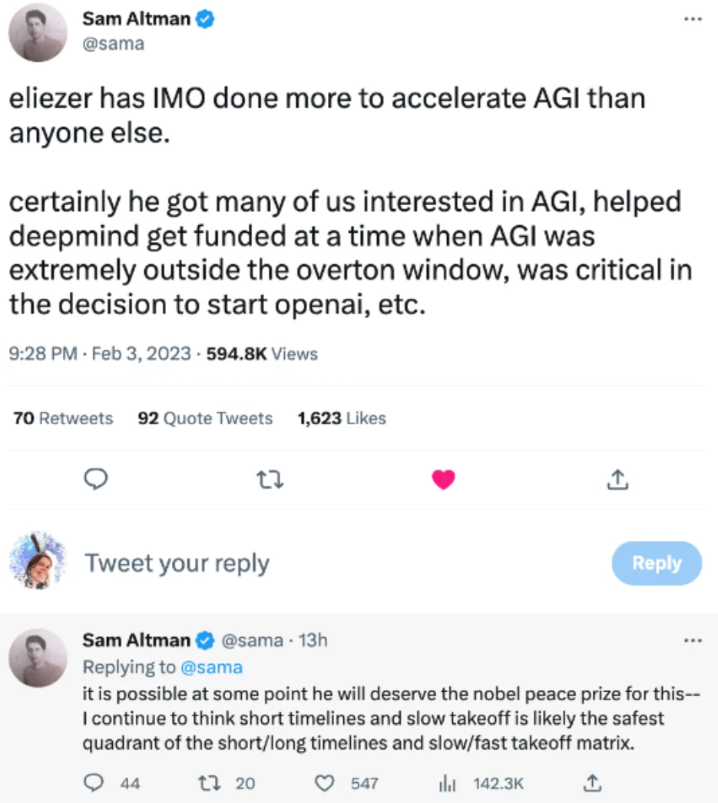
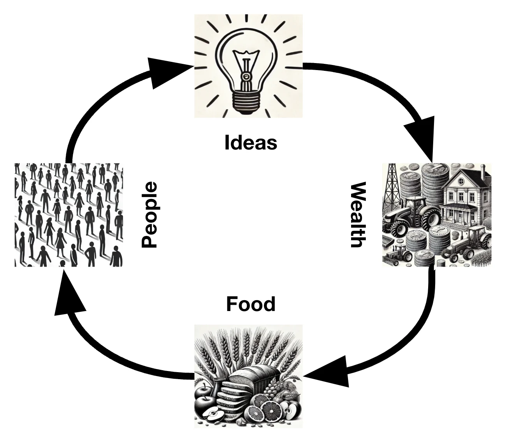
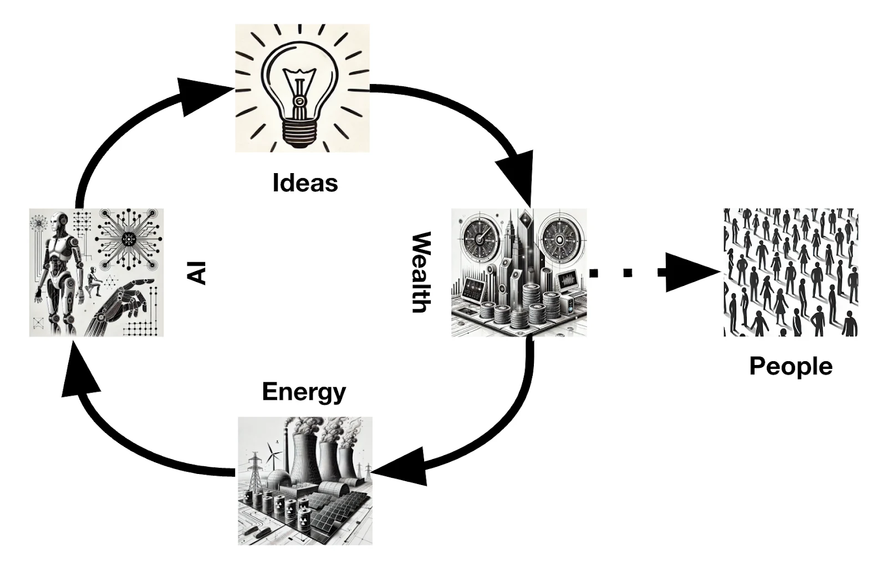
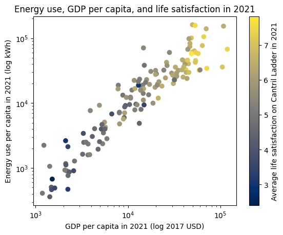
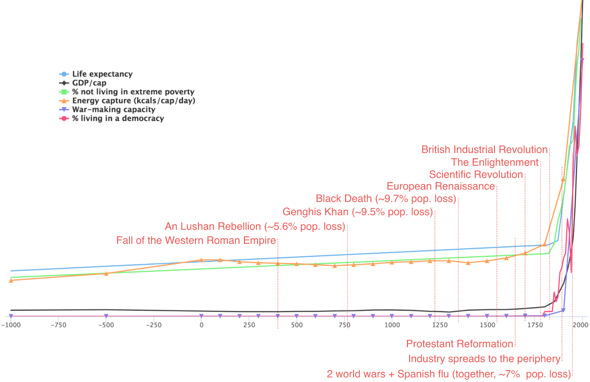
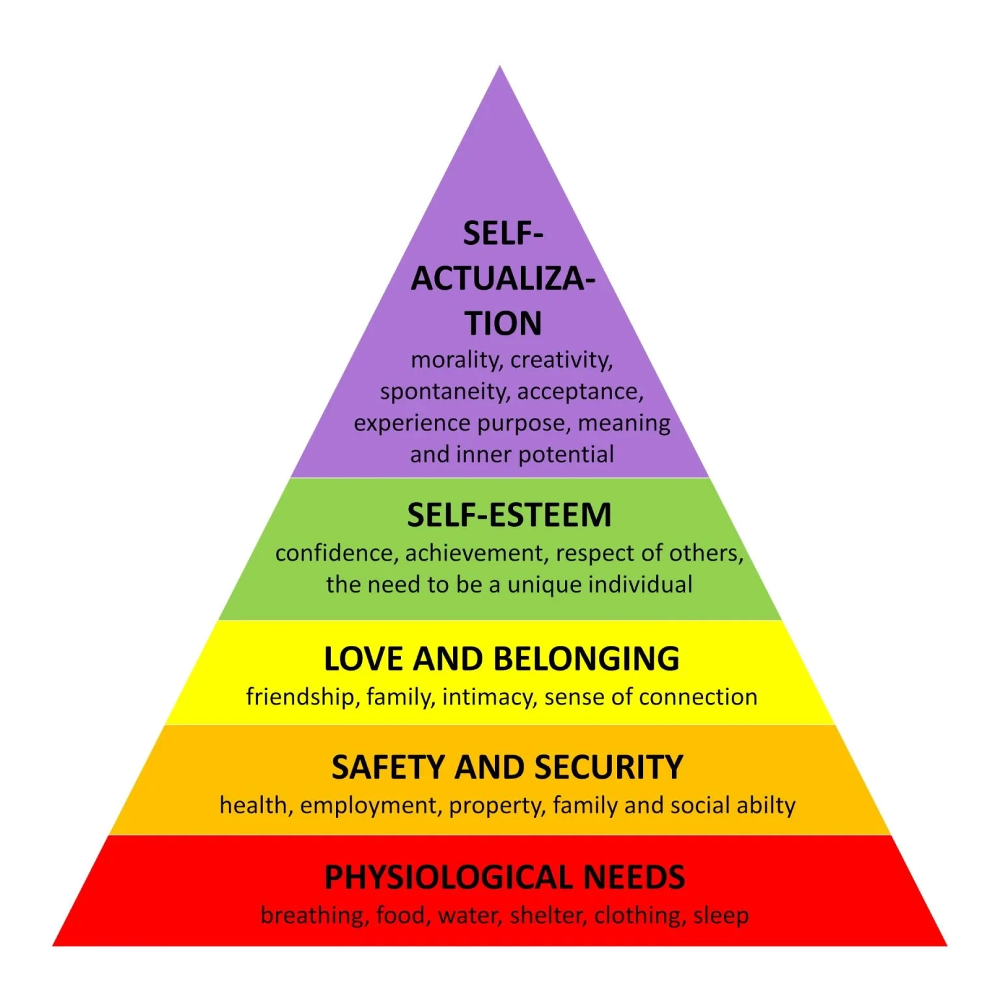

Positive visions for AI
Reasons to make the positive case
Everyone who starts thinking about AI starts thinking big. Alan Turing predicted that machine intelligence would make humanity appear feeble in comparison. I. J. Good said that AI is the last invention that humanity ever needs to invent.
The AI safety movement started from Eliezer Yudkowsky and others on the SL4 mailing list discussing (and aiming for) an intelligence explosion and colonizing the universe. However, as the promise of AI has drawn nearer, visions for AI upsides have paradoxically shrunk. Within the field of AI safety, this is due to a combination of the “doomers” believing in very high existential risk and therefore focusing on trying to avoid imminent human extinction rather than achieving the upside, people working on policy not talking about sci-fi upsides to look less weird, and recent progress in AI driving the focus towards concrete machine learning research rather than aspirational visions of the future.
Both DeepMind and OpenAI were explicitly founded as moonshot AGI projects (“solve intelligence, and then use that to solve everything else” in the words of Demis Hassabis). Now DeepMind - sorry, Google DeepMind - has been eaten by the corporate machinery of Alphabet, and OpenAI is increasingly captured by profit and product considerations.
The torch of AI techno-optimism has moved on the e/acc movement. Their core message is correct: growth, innovation, and energy are very important, and almost no one puts enough emphasis on them. However, their claims to take radical futures seriously are belied by the fact that their visions of the future seem to stop at GenAI unicorns. They also seem to take the general usefulness of innovation not as just a robust trend, but as a law of nature, and so are remarkably incurious about the possibility of important exceptions. Their deeper ideology is in parts incoherent and inhuman. Instead of centering human well-being, they worship the “thermodynamic will of the universe”. “You cannot stop the acceleration”, argues their figurehead, so “[y]ou might as well embrace it” - hardly an inspiring humanist rallying cry.
In this piece, we want to paint a picture of the possible benefits of AI, without ignoring the risks or shying away from radical visions. Why not dream about the future you hope for? It’s important to consider the future you want rather than just the future you don’t. Otherwise, you might create your own unfortunate destiny. In the Greek myth about Oedipus, he was prophesied to kill his father, so his father ordered him to be killed, but he wasn’t and ended up being adopted. Years later he crossed his father on the road in his travels and killed him, as he had no idea who his father was. Oedipus’ father focusing on the bad path might have made the prophecy happen. If Oedipus' father hadn’t ordered him to be killed, he would have known who his father was and likely wouldn’t have killed him.
When thinking about AI, if we only focus on the catastrophic future, we may cause it to become true by causing an increase in attention on this topic. Sam Altman, who is leading the way in AI capabilities, claimed to have gotten interested from arch-doomer Eliezer Yudkowsky. We may also neglect progress towards positive AI developments; some people think that even direct AI alignment research should not be published because it might speed up the creation of unaligned AI.

With modern AI, we might even get a very direct “self-fulfilling prophecy” effect: current AIs increasingly know that they are AIs, and make predictions about how to act based on their training data which includes everything we write about AI.
Benefits of AI
Since we think a large focus of AI is on what could go wrong, let’s think through what could go well starting from what’s most tangible and close to the current usage of AI to what the more distant future could hold.
-
AI will do the mundane work
-
Lowering the costs of coordination
-
Spreading Intelligence
-
AI can create more technology
-
Increased technology, wealth and energy, correlate with life being good
-
All of the above, and the wealth it creates, could allow people to self-actualise more
Already, AI advances mean that Claude has beocme very useful, and programmers are faster and better. But below we’ll cast a look towards the bigger picture and where this could take us.
AI will do the mundane work
First, there’s a lot of mundane mental work that humans currently have to do. Dealing with admin work, filing taxes, coordinating parcel returns -- these are not the things you will fondly be reminiscing about as you lie on your deathbed. Software has reduced the pain of dealing with such things, but not perfectly. In the future, you should be able to deal with all administrative work by specifying what you want to get done to an AI, and being consulted on decision points or any ambiguities in your preferences. Many CEOs or executives have personal assistants; AIs will mean that everyone will have access to this.
What about mundane physical work, like washing the dishes and cleaning the toilets? Currently, robotics is bad. But there is no known fundamental obstacle to having good robotics. It seems mainly downstream of a lot of engineering and a lot of data collection. AI can help with both of those. The household robots that we’ve been waiting for could finally become a reality.
Of course, it is unclear whether AIs will first have a comparative advantage against humans in mundane or meaningful work. We’re already seeing that AI models are making massive strides in making art, way before they’re managing our inboxes for us. It may be that there is a transitional period where robotics is lagging but AIs are smarter-than-human, where the main economic value of humans is their hands rather than their brains.
Lowering the cost of coordination
With AI agents being able to negotiate with other AI agents, the cost of coordination is likely to dramatically drop (see here for related discussion). Examples of coordination are agreements between multiple parties, or searching through a large pool of people to match buyers or sellers, or employees and employers. Searching through large sets of people, doing complex negotiations, and the monitoring and enforcement of agreements all take lots of human time. AI could reduce the cost and time taken by such work. In addition to efficiency gains, new opportunities for coordination will open up that would have previously been too expensive.
Small-scale coordination
To give an example of this on the small scale of two individuals, say you are trying to search for a new job. Normally you can’t review every single job posting ever, and employers can’t review every person in the world to see if they want to reach out. However, an AI could filter that for the individual and another AI for the business, and the two AIs could have detailed negotiations with each other to find the best possible match.
Coordination as a scarce resource
A lot of the current economy is a coordination platform; that’s the main product of each of Google, Uber, Amazon, and Facebook. Reducing the cost of searching for matches and trades should unlock at least as much mundane benefits and economic value as the tech platforms have.
Increased coordination may also reduce the need to group people into roles, hierarchies, and stereotypes. Right now, we need to put people into rigid structures (e.g. large organisations with departments like “HR” or “R&D”, or specific roles like “doctor” or “developer”) when coordinating a large group of people. In addition to upholding standards and enabling specialisation of labour, another reason for this is that people need to be legible to unintelligent processes, like binning of applicants by profession, or the CEO using an org chart to find out who to ask about a problem, or someone trying to buy some type of service. Humans can reach a much higher level of nuance when dealing with their friends and immediate colleagues. The cheap intelligence we get from AI might let us deal with the same level of nuance with a larger group of people than humans can themselves track. This means people may be able to be more unique and differentiated, while still being able to interface with society.
Large-scale Coordination
On a larger scale, increased coordination will also impact geopolitics. Say there are two countries fighting over land or resources. Both countries could have AI agents to negotiate with the other AI agents to search the space of possible deals and find an optimal compromise for both. They could also simulate a vast number of war scenarios to figure out what would happen; much conflict is about two sides disagreeing about who would win and resolving the uncertainty through a real-world test. This relies on three key abilities: the ability to negotiate cheaply, the ability to simulate outcomes, and the ability to stick to and enforce contracts. AI is likely to help with all three. This could reduce the incentives for traditional war, in that no human lives are needed to be lost because the outcome is already known and we can negotiate straight from that. We also know exactly what we are and are not willing to trade off which means it’s easier to optimise for the best compromise for everyone.
Spreading the intelligence
AI lets us spread the benefits of being smart more widely.
The benefits of intelligence are large. For example, this study estimates that a 1 standard deviation increase in intelligence increases your odds of self-assessed happiness by 11%. Now, part of this gain comes from intelligence being a positional good: you benefit from having more intelligence at your disposal than others, for example in competing for a fixed set of places. However, intelligence also has absolute benefits, since it lets you make better choices. And AI means you can convert energy into intelligence. Much as physical machines let the weak gain some of the benefits of (even superhuman) strength, AI might allow all humans to enjoy some of the benefits of being smart.
Concretely, this could have two forms. The first is that you could have AI advisors increase your ability to make plans or decisions, in the same way that - hypothetically - even a near-senile president might still make decent decisions with the help of their smart advisors. With AI, everyone could have access to comparable expert advisors. The effect may be even more dramatic than human advisors: the AI might be superhumanly smart, the AI might be more verifiably smart (a big problem in selecting smart advisors is that it can be hard to tell who is actually smart, especially if you are not), and if AIs are aligned successfully there may be less to worry about in trusting it than in trusting potentially-scheming human advisors.
The second is AI tutoring. Human 1-1 tutoring boosts educational outcomes by 2 standard deviations (2 standard deviations above average is often considered the cutoff for “giftedness”). If AI tutoring is as good, that’s a big deal.
AI is the ultimate meta-technology
AI is special because it automates intelligence, and intelligence is what you need to build technology, including AI, creating a feedback loop. Some other previous technologies have boosted other technologies; for example, the printing press massively helped the accumulation of knowledge that led to the invention of many other technologies. But we have not before had a technology that could itself directly advance other technology. Such AI has been called PASTA (Process for Automating Scientific and Technological Advancement).
Positive feedback loops - whether self-improving AIs, nuclear reactions, epidemics, or human cultural evolution - are very powerful, so you should be wary of risks from them. Similarly, it is currently at best extremely unclear whether AIs that improve themselves could be controlled with current technology. We should be very cautious in using AI systems to improve themselves.
In the long run, however, most of the value of AI will likely come from their effects on technological progress, much like the next industrial revolution. We can imagine AIs slashing the cost and increasing the speed of science in every field, curing diseases and making entire new veins of technology available, in the same way that steam engines made entirely new veins of coal accessible.
In particular, AIs help de-risk one of the largest current risks to future human progress. One model of the feedback loop behind humanity’s progress in the past few centuries is that people led to ideas led to wealth led to food led to more people.

However, greater wealth no longer translates into more people. The world population, which was exponentially growing for much of the 19th and 20th centuries, is likely to be in decline by the end of the 21st century. This is likely to have negative consequences for the rate of innovation, and as discussed in the next section, a decline in productivity would likely have a negative impact on human wellbeing. However, if AIs start driving innovation, then we have a new feedback loop: wealth leads to energy leads to more AIs leads to ideas leads to wealth.

As long as this feedback loop does not decouple from the human economy and instead continues benefitting humans, this could help progress continue long into the future.
Wealth and energy are good
If you want humans to be well-off, one of the easiest things to do is give them more wealth and more energy. GDP per capita (on a log scale) has a 0.79 correlation with life satisfaction, and per-capita energy use (again on a log scale) has a 0.74 correlation with life satisfaction. Increased wealth and energy correlate with life satisfaction, and we should expect these trends to continue.

Above: GDP per capita (x-axis), energy use (y-axis), and life satisfaction (colour scale) for 142 countries. There are no poor countries with high energy use, and no high energy use countries that are poor. There are no countries with high average life satisfaction that are not high in both energy use and average GDP per capita. The axes are logarithmic, but since economic growth is exponential, countries should be able to make progress at a constant rate along the axis. Data source: Our World In Data (here, here, and here).
(It is true that energy use and economic growth have been increasingly decoupling in rich countries, due to services being more of the economy, and efficiency gains in energy use. However, the latter is effectively increasing the amount of useful energy that can be used - e.g. say the amount of energy needed to cook one meal is now enough to cook two meals, which is effectively the same as gaining more energy. However, efficiency effects are fundamentally limited because there is a physical limit, and also if demand is elastic then efficiency gains lead to increased energy use, meaning it doesn’t help the environment either. Ultimately, if you want to do more things in the physical world, you need more energy).
A wealthy, energy-rich society has many material benefits: plentiful food, advanced medicine, high redistributive spending becomes feasible, and great choice and personal freedom through specialisation of labour and high spending power. A wealthy and energy-rich society also has some important subtler benefits. Poverty and resource constraints sharpen conflict. Economic growth is intimately linked to tolerance and liberalism, by weakening the cultural status and clout of zero-sum strategies like conflict and politicking.
One clear historic example of how increases in energy correlated with improved quality of life was in the industrial revolution, arguably the best and most important thing that ever happened. Before it, trends in human wellbeing seemed either stagnant, fluctuating, or very slow, and after it, all the variables for which we can find good long-term series that are related to human well-being shoot upwards.

Above: variables correlated with human well-being over time. Source: Luke Muehlhauser
Therefore, it’s worth keeping in mind that boosting energy and wealth is good, actually. And the most powerful way to do that is through inventing new technologies that let us use energy to serve our needs.
The heart of the industrial revolution was replacing part of human manual labour with something cheaper and more powerful. AI that replaces large parts of human mental labour with something cheaper and more powerful should be expected to be similarly transformative. Whether it is a good or bad transformation seems more uncertain. We are lucky that industrialisation happened to make national power very tightly tied to having a large, educated, and prosperous middle class; it is unclear what is the winning strategy in an AI economy. We are also lucky that the powerful totalitarian states enabled by industrial technology have not triumphed so far, and they might get further boosts from AI. Automating mental labour also involves the automation of decision-making, and handing over decision-making to the machines is handing over power to machines, which is more risky than handing the manual labour to them. But if we can safely control our AI systems and engineer good incentives for the resulting society, we could get another leap in human welfare.
Self actualisation
Now say we’ve had a leap in innovation and energy through Transformative AI (TAI) and we’ve also reached a post scarcity world. What happens now? Humans have had all their basic needs met, most jobs are automated, but what do people spend their time actually doing?
Maslow’s Hierarchy
Maslow’s hierachy of needs is a framework of understanding human needs and drivers for human behaviour. Maslow suggested that in most scenarios people need to mostly satisfy one level before being able to focus on higher-level needs.

The top level of the hierachy is self-actualisation. The peak of human experience is something that few can currently reach - but maybe everyone could get there.
There is a possible path the world takes in which all humans can reach self-actualisation. With increases in technology & wealth, such as with TAI and a Universal Basic Income (UBI), we would be able to provide the basic needs of food, water, shelter, and clothing for all humans, enabling people to easily meet their basic needs. Humans can now spend more time on the things they want, for example moving up through Maslow’s hierarchy to focusing on increasing love and belonging, self-esteem and self-actualization.
Say you are in a post scarcity world, what would you do if you didn’t have to work?
Would you be spending time with loved ones, engaging in social activities that provide a sense of connection and belonging, self-esteem? Would it be honing your craft and becoming an expert in a particular field? Or would you spend the whole time scrolling on your phone?
Say hypothetically a wealthy billionaire gave you a grant to work on anything you wanted, would you be happy with having the complete freedom to spend your time as you wished?
Often people assume that others will be unhappy with this world, but would you? There is a cognitive bias where people tend to judge themselves as happier than their peers, which could nudge you to think people would be less happy in this world, even if you would enjoy this.
In this post-scarcity world, humans could spend more time on creative pursuits such as art, music, and any other hobbies – not with the goal of making money, but to reach self-actualisation.
With AI being better than humans in every dimension, AI can produce the best art in the world, but there is intrinsic value in honing your craft, improving at art or expressing your feelings through it, in and of itself. The vast majority of art is not created to be the best art in the world but for the journey itself. A child that paints a finger painting and the parent who puts it on the wall does not think “my child’s art is better than Van Gogh’s”. Instead, they feel a sense of excitement about the progress their child has made and the creative expression the child has produced.
Another example is the Olympic games. Nobody needs to win the olympic games to survive, but it lets people express pride in their country, hone their craft, attain status, and so on. But the actual task is just a game, a social construct. More and more tasks will look like social constructs and games we create to challenge each other.
Examples of post-scarcity scenes
Since this is quite theoretical, let's consider examples where we’ve had “post-scarcity” microcosms to explore.
The French Bourgeoisie
The French leisure class, or bourgeoisie, were a class of wealthy elite that emerged in 16th century France. Many had enough money to pursue endeavours like refining their taste in arts and culture. Salon culture was a cornerstone of bourgeoisie social life. Gatherings featuring discussions on literature, art, politics and philosophy.
Upper Class in the Victorian Era
The upper class in the Victorian era enjoyed a variety of leisure activities that reflected their wealth, status and values. They attended social events and balls, fox hunting and other sports, theater and opera, art and literature, travel, tea parties and social visits, gardening and horticulture, charitable work and philanthropy. Several undertook serious pursuits in science or art.
Burning Man
Burning Man is an annual festival where people take all the basic things you need with you for a week of living in the desert:food, water, shelter. People have a week to create a new community or city that is a temporary microcosm of a post-scarcity world. They pursue artistic endeavours and creative expression, music, dance and connecting with others. People often talk about Burning Man events being some of the best experiences of their lives.
Successful Startup Founders in The Bay Area
In San Francisco, there is a crossover with hippie culture and tech, and many people with excess wealth and resources, resulting in many looking for more in life. They try to reach self actualisation, by pursuing many arts and creative pursuits. Hippie movements often encourage communal living, and a sense of connection with those around you. Many may raise eyebrows at the lifestyles of some such people, but it’s hard to claim that it’s a fundamentally bad existence.
More pessimistic views about humans?
It is true that not all cultural tendencies in a post-scarcity world would be positive. In particular, humans have a remarkable ability to have extremely tough and all-consuming social status games, seemingly especially in environments where other needs are met. See for example this book review about the cut-throat social scene of upper-class Manhattan women or this one about the bland sameness and wastefulness of nightlife, or this book review that ends up concluding that the trajectory of human social evolution is one long arc from prehistoric gossip traps to internet gossip traps, with liberal institutions just a passing phase.
But the liberal humanist attitude here is to let humans be humans. Yes, they will have petty dramas and competitions, but if that is what they want, who is to tell them no? And they will also have joy and love.
Would a post-scarcity world have meaning? Adversity is one of the greatest sources of meaning. Consider D-Day, when hundreds of thousands of soldiers got together to charge up a beach under machine-gun fire to liberate a continent from Nazi rule. Or consider a poor parent of four working three jobs to make ends meet. There are few greater sources of meaning. But adversity can be meaningful while involving less suffering and loss. A good future will be shallower, in a sense, but that is a good thing.
Finally, it is unclear if we would get a happy world, even if we had the technology for post-scarcity, because of politics and conflict. We will discuss this later.
Radical improvements
AI might also help with radical but necessary improvements to the human condition.
People die. It is a moral tragedy when people are forced to die against their will, as happens to over 50 million people per year. Medicine is making progress against many causes of death and disability; in the limit it can cure all of them. We should reach that limit as fast as possible, and AI can likely help accelerate the research and deployment of solutions.
One of the greatest inequalities in the world is inequality in intelligence. Some people struggle to perform in simple jobs, while others (well, at least one) are John von Neumann. In the short term, AI might help by making cognitively demanding tasks more accessible to people through AI tutors and AI copilots. In the longer term, AI might help us enhance human intelligence, through brain-AI integration or new medical technology.
Reasons to worry
Though there are many potential upsides for AI and AGI as argued in this post, that doesn’t mean there aren’t risks.
The plausible risks of AI go all the way to human extinction, meaning this shouldn’t be taken lightly. Since this piece is focused on the upside risk, not the downside risk, we will not argue this point in depth, but it is worth revisiting briefly.
Existential risk from AI is a serious concern
It is intuitive that AI is risky.
First, creating something smarter, faster, and more capable than humans is obviously risky, since you need to very precisely either control it (i.e. stop it from doing things you don’t like) or align it (i.e. make it always try to do what you would want it to do). Both the control and alignment problem for AIs still have unsolved technical challenges. And that’s assuming that AI is in the right hands.
Second, even if the AIs remain in our control, they are likely to be as transformative as the industrial revolution. Eighteenth-century European monarchs would’ve found it hard to imagine how the steam engine could challenge their power, but the social changes that were in part a result of them eventually wrested all their powers away. In the modern world, a lot of power depends on large educated workforces of humans, whereas sufficiently strong AGI might decorrelate power and humans, decreasing the incentive to have people be educated and prosperous - or to have people around at all.
Apart from object-level arguments, consider too the seriousness with which the AI doomsday is discussed. Many top researchers and all top AI lab CEOs have signed a statement saying “Mitigating the risk of extinction from AI should be a global priority alongside other societal-scale risks such as pandemics and nuclear war”. Nuclear war and pandemics are the only other cases where similarly serious predictions have been made by a similarly serious set of people (though arguably climate change is close: the science on the effects is more established and certain, but while catastrophe is more likely, literal human extinction from it is much less likely).
Side-effects of non-existentially-bad AI might be large
Consider the internet, a widely-successful technology with a lot of benefits. There are credible claims that the internet is responsible for harms ranging from massively increased depression rates among teenagers to political polarisation to widespread productivity loss through addiction and distraction.
In the same way, the success of AI might lead to bad side effects, even if all the existential risks are avoided.
For example, AI could replace human connection. Human friends and partners might increasingly be replaced with AIs. However bad it was in other ways, at least on pre-AI social media you at least interacted with humans (or simple algorithms), but with AIs it’s possible to have what looks like deep emotional relationships. Just look at the Replika subreddit from a year ago when they changed the algorithm to only allow “PG-rated interactions”. Many users were upset. The film “Her” doesn’t seem far off, as Sam Altman acknowledges. Such relationships give the human much more safety and control than in human relationships, which might both be very attractive to humans, while also excessively coddling them. Given that much human happiness and meaning comes from human relationships and bonding, widespread AI substitution of them could mean the destruction of a large part of all human wellbeing and meaning in the world. On a more prosaic level, society might atomise into individuals hoarding compute credits to spend on running their AI companions without connecting with other humans, with severe effects on society’s functioning, or humans might stop having children and human populations might crash. Humanity has flourished through collaboration and socialisation. If we use AIs to replace this in an overly thoughtless way, the fabric of society could crumble.
Apart from being superhuman at forming relationships with humans, AIs might be superhuman at persuasion. We can imagine AIs producing the vast majority of content that people consume. We can imagine a totalitarian world where the governments with the greatest compute resources can dominate the conversation forever. Instead of humans having ideas and sometimes persuading other humans to adopt them, driving social progress, any human-generated ideas might be swamped by a greater quantity of superhumanly persuasive counter-arguments that support the status quo. We can also imagine a dystopian decentralised world. Already, many online memes (in Dawkins’s original sense of the word) are maladaptive, spreading not by having good effects on their hosts but by being incredibly good at spreading from person to person. AI might make us much better at searching the space of ideas for the most viral ones. Ideas that aren’t maximally viral might be outcompeted. Eventually, our institutions could become mere puppets that serve as viral hosts for the most transmissive memes, as part of an endless tug-of-war where AI-generated memes compete to compel humans to spread them.
Seems bad.
Not good nor bad, but some third thing.
Many debates turn into mood affiliation debates. Are guns bad? Is more government good? But remember: politics is the mindkiller. Navigating a complicated world requires more than the ability to stick the label “good” or “bad” on entire domains. If you were seated in the control room of a nuclear power station, you wouldn’t ask yourself: uranium, good or bad? Instead, you want to steer towards the small set of states where the reaction is perched between dying out and exploding, while generating useful clean power.
We’ve also seen again and again that technology and social change have strong effects on each other, and these are often hard to predict. We’ve discussed how industrial technology may have led to democracy. There is serious academic debate about whether the stirrup caused feudalism, or whether the Black Death was a driver of European liberalism, or whether social media was a significant cause of the Arab Spring. The birth control pill was a major influence of the sexual revolution, and the printing press helped the Protestant Reformation. Often, the consequences of a new technology are some obvious direct benefits, some obvious direct harms, and the shifting of some vast social equilibrium that ends up forever reshaping the world in some way no one saw coming. So far we’ve clearly ended up ahead on net, and maybe that will continue.
Humanity has spent over a hundred thousand years riding a feedback loop of accumulating cultural evolution. Over the past few hundred, the industrial revolution boosted the technological progress feedback loop. Human wellbeing has skyrocketed, though along the way we’ve had - and are continuing to have - close calls with nuclear war, totalitarianism, and environmental issues. We’ve had a healthy dose of luck, including in generalities like the incentive structures of industrial economics and specifics like the heroism of Stanislav Petrov. But we’ve also had an enormous amount of human effort and ingenuity spent on trying to chart a good path for civilization, from solar panel subsidies to the Allies winning World War 2.
For most of this time, the direction of the arrow of progress has been obvious. The miseries of poverty and the horrors of close-up totalitarianism are very powerful driving forces after all. And while both continue ravaging the world, developed countries have in many ways gotten complacent. There are fewer obvious areas of improvement for those lucky enough to enjoy a life of affluence in the developed world. But the future could be much better still.
Know where to aim
We think it’s important to have a target of what to aim for. We need to dream about the future we want. A strong culture needs a story of what it is driving towards, and humanity needs a compelling vision of how our future turns out well so we can work together to create the future we all want. AI seems like the biggest upcoming opportunity and risk. We hope we can avoid the risks, and realise the positive vision presented here, together with a hundred other things we can’t yet imagine.